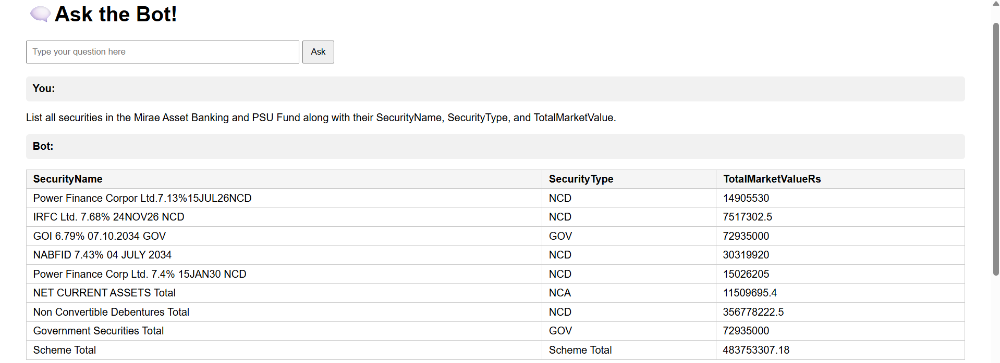
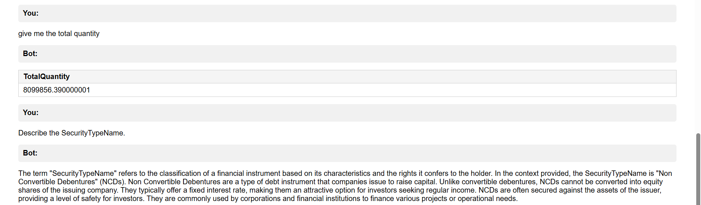

Building a Retrieval-Augmented Generation (RAG) Chatbot
Published on 25-08-2025
🔎 What is a RAG Chatbot?
RAG stands for Retrieval-Augmented Generation. It combines:
- 🔹 Retriever – finds the most relevant pieces of data for a query
- 🔹 Generator – uses an LLM to create a natural-language answer
Instead of relying only on pre-trained knowledge, the bot dynamically
looks into your dataset first, then crafts an answer based on that context.
⚙️ Tech Stack
- Python for scripting and data processing
- Pandas for reading & cleaning CSV data
- Sentence Transformers (
all-MiniLM-L6-v2) for embeddings
- FAISS for similarity search (retrieving relevant text chunks)
- Flask for the minimal web UI
- OpenRouter API to query a language model for response generation
🛠️ Implementation Steps
- Read
BotData.csv and parse the ChunkContentDto.Content field
- Pre-process numeric/date fields for analytics queries
- Create embeddings with SentenceTransformer and store them in a FAISS index
- Detect if the user’s question is numeric (sum, average, etc.) or text-based
- For numeric queries → compute directly and optionally format using the LLM
- For text queries → retrieve relevant chunks & ask the LLM for a concise answer
- Serve a very light Flask HTML interface for asking questions
📸 UI Previews

Query Input & Retrieval

Answer Display & Context
📜 Key Code Snippet
# Build FAISS index
data_embeddings = model.encode(blocks, convert_to_numpy=True)
dimension = data_embeddings.shape[1]
index = faiss.IndexFlatL2(dimension)
index.add(data_embeddings)
# Retrieve context
def get_context(query, top_k=20, max_chars=12000):
query_embedding = model.encode([query], convert_to_numpy=True)
distances, indices = index.search(query_embedding, top_k)
return "\n\n".join([blocks[i] for i in indices[0]])[:max_chars]
# Flask route
@app.route("/", methods=["GET", "POST"])
def home():
...
Full code available on request or in the project files.
💡 Lessons Learned
- Managing embeddings efficiently is crucial for performance
- Prompt design matters — concise context improves answer quality
- Logging errors from API calls saves debugging time
- Even a minimal Flask UI makes testing far easier than CLI
🚀 Conclusion
This project demonstrates how a lightweight RAG workflow can turn a simple CSV
into a question-answering assistant. In the future, I plan to add authentication,
better UI, and support for file uploads.
← Back to Portfolio